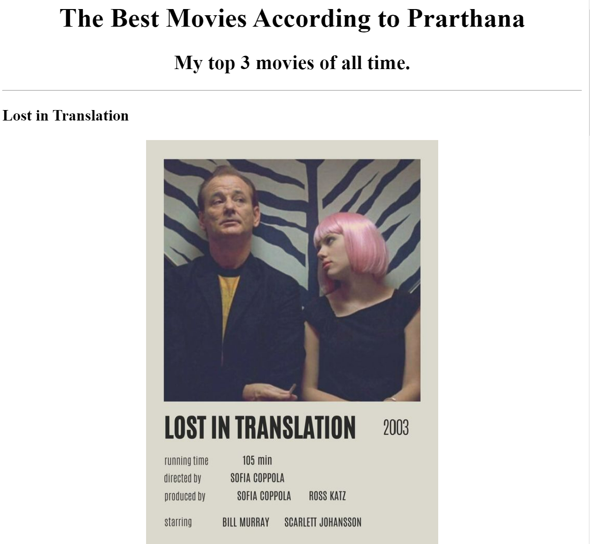

<!-- TODO 1: Create the HTML Boilerplate -->

<!-- TODO 2: Add Your previous projects' HTML into the public folder -->

<!-- TODO 3: Take screenshots of your project previews and add the images to the images folder -->

<!-- TODO 4: Add titles/subtitles etc. -->

<!-- TODO 5: Add a link to the project pages -->

<!-- TODO 6: Add images to show the project previews
HINT for TODO 6: You can use the height attribute set to 200 to make the image smaller:
https://developer.mozilla.org/en-US/docs/Web/HTML/Element/img#attr-height -->

<!-- TODO 7: Add the Contact Me and About Me page links -->
<center>
     <div class="topheader"><h1>Prarthana Phukan's Portfolio</h1></center></div>
     <div class="subhead"><h2>My Web Development Projects-</h2></div>
<hr/>
<center><div class="header"><h3><a href="./public/movie ranking.html">Movie Ranking Project</a></h3>
<a href="./public/movie ranking.html"></a></div>
<hr/>
<div class="header"><h3><a href="./public/birthday invite.html">Birthday Invite Project</a></h3>
<a href="./public/birthday invite.html"></a>
</div><hr/>
</center>
<div class="header"><a href="./public/about.html">About Me</a> <a href="./public/contact.html">Contact Me</a></div>
<style>
     .header {
  padding: 20px;
  text-align: center;
  background: #e8eee285;
  color: rgb(16, 16, 16);
  font-size: 15px;
}
.topheader {
  padding: 25px;
  text-align: center;
  background: #b573c5;
  color: rgb(16, 16, 16);
  font-size: 30px;
  font-family: 'Gill Sans', 'Gill Sans MT', Calibri, 'Trebuchet MS', sans-serif;
}
.subhead {
  padding: 15px;
  text-align: center;
  background: #b3875583;
  color: rgba(253, 253, 253, 0.71);
  font-size: 17px;
  font-family: 'Gill Sans', 'Gill Sans MT', Calibri, 'Trebuchet MS', sans-serif;
}
     body {
       background-image: url('./assets/images/BACKG.jpg');
       font-family: Lucida Sans Unicode;
       margin: 10;
     }
     
 
}

     </style>
     